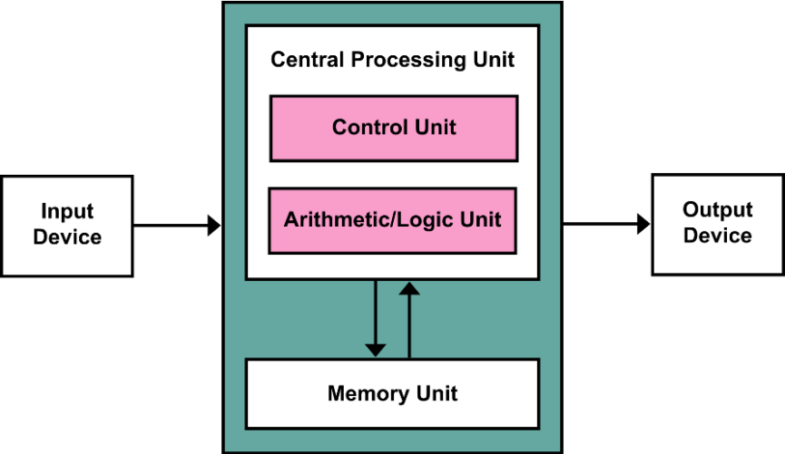

Chap 1: Computer Abstractions and Technology⚓︎
约 2357 个字 预计阅读时间 12 分钟
核心知识
- 八个伟大思想（贯穿本课程始末）
- CPU 性能的衡量
- 相关指标：执行时间、吞吐量（单位时间内完成的工作量）
- 性能 = 执行时间的倒数
- 执行时间 -> CPU 时间 -> 周期数 / 频率（周期数 * 周期）
- 周期数 = 指令数 * CPI
- 因此衡量 CPU 性能的最关键的 3 个因素：指令数、CPI、时钟频率
- 边际收缩效应规律：\(\mathrm{T_{improved}} = \dfrac{T_{\text{affected}}}{\mathrm{Amount\ of\ improvement}} + T_{\text{unaffected}}\)
- \(\mathrm{MIPS} = \dfrac{\mathrm{Instruction\ count}}{\mathrm{Execution\ time} \times 10^6}\)
感觉这一章花了很大的篇幅讲述与计算机相关的历史背景，真正有用的知识点感觉很少 ......
零碎的背景知识
- 第一台机械式计算器（加、减） —— by Blaise Pascal
- 图灵机
-
冯 · 诺依曼架构
- 计算与存储分离
- 数据与指令保存在同一个存储器

-
计算机的演进
- 电子管（真空管）
- ENIAC
- 晶体管
- IBM 1401
- UNIVAC III
- 集成电路
- IBM 360
- 微处理器
- 电子管（真空管）
-
电脑具备什么特征
- 电子化的实现方式
- 有指令集
- 可执行指令
- 可存储指令与数据
- 计算能力上是图灵完备的
-
PC
- 第一台现代 PC：Xerox Alto
- Macintosh
- Windows
-
RISC(Reduced Instruction Set Computer, 精简指令集计算机 )
-
计算机类型
- 个人计算机 (personal computers)
- 服务器 (server computers)
- 超级计算机 (supercomputers)
- 嵌入式计算机 (embedded computers)
-
后 PC 时代
- 个人移动设备 (personal mobile device, PMD)
- 云计算 (cloud computing)
Eight Great Ideas⚓︎
-
设计紧跟摩尔定律(Design for Moore's Law)
- 摩尔定律：18-24 个月内集成电路的性能就会翻一番
-
采用抽象简化设计 (Use abstraction to simplify design)
- 加速大概率事件 (Make the common case fast)
- 通过并行提高性能 (Performance via parallelism)
- 通过流水线提高性能 (Performance via pipelining)
- 通过预测提高性能 (Performance via prediction)
- 存储器分层(Hierarchy of memories)
- 通过冗余提高可靠性 (Dependability via redundancy)
Below the Program⚓︎
指令集(instruction set architecture)：硬件和软件之间的接口
高级语言 -> 硬件语言的过程：


- 高级编程语言（
A + B）- 形式上更接近自然语言
- 编译器 (compiler) 将其翻译其汇编语言
- 独立于硬件之外
- 汇编语言（
add A, B）- 汇编器 (assembler) 将其翻译为机器语言
- 机器语言（
1000110010100000）- 计算机仅理解电子信号的开闭（二进制 0/1）
- 机器语言用二进制数字表示机器指令
Compute Organization⚓︎


硬件的组成部分：
- 输入设备
- 输出设备
- CPU（位于主板 (logical board)）
- 控制器 (controler)：根据程序指令来控制数据通路、内存和 I/O 设备
- 数据通路 (datapath)：执行算术运算
- 内存：
- 主存 (main memory)：易失性 (volatile)
- RAM：DRAM、SRAM
- 外存 (secondary memory)：非易失性 (nonvolatile)
- 磁盘 (magnetic disk)
- 闪存 (flash memory)
- 主存 (main memory)：易失性 (volatile)
软件的分类：
- 应用软件
- 办公软件
- ...
- 系统软件
- 操作系统 (operating system)
- 编译器 (compiler)：将由高级编程语言 (high-level language, HLL) 编写的程序翻译成机器能够理解的内容
- 驱动 (firmware)
- 网卡驱动
- ...
The Technology of Building Processors and Memories⚓︎
集成电路的制作流程：
成本计算：
Performance⚓︎
衡量计算机性能的指标：
- 响应时间 / 执行时间 (response time/execution time)：执行任务所需的时间
- 吞吐率 (throughput/bandwidth)：单位时间内完成的工作量
注：我们目前仅考虑响应时间
- 性能 = 1 / 执行时间，即 \(\text{Performance}_X = \dfrac{1}{\text{Execution}_X}\)
- X 的性能比 Y 快 n 倍：\(\dfrac{\rm{Performance}_X}{\rm{Performance}_Y} = \dfrac{\rm{Executino\ time}_Y}{\rm{Execution\ time}_X} = n\)
执行时间的测量：
- 运行时间 (elapsed/wall clock/response time)：完成任务的总耗时，包括磁盘和内存的访问、I/O 活动等，它反映了系统的性能
- CPU 时间：执行给定任务总共所花的时间，包括用户 CPU 时间（程序运行耗时）和系统 CPU 时间（执行与该程序相关的操作系统任务的耗时）

CPU 周期 (clock cycle)/CPU 频率 (clock rate)的相关公式：
由此，我们可以得出性能提升的方法：
- 降低 CPU 周期数 (CPU clock cycle)
- 提升 CPU 频率 (CPU rate)
- 但是改善其中的一个属性，就有可能会拉低另一个属性，所以需要权衡好两者
例题
 指令数(instruction count, IC) 和CPI(clock cycles per instruction) 的相关公式：
指令数(instruction count, IC) 和CPI(clock cycles per instruction) 的相关公式：
-
指令数：取决于指令集架构，而非具体的实现方式
注：如果题目说这几个处理器的指令集架构是一样的，这就说明它们的指令数也是一样的。
-
CPI：每条指令的平均周期数，取决于很多的设计细节，包括内存系统、处理器结构等
- 不同的指令集架构、不同的指令类别（比如 RISC-V 的 R 型指令、I 型指令等等）会产生不同的 CPI，如果 CPU 执行多种类型的指令，上面的公式需要修改为：
例题
- 加权平均 CPI
例题

总结
决定性能的因素：
- 算法（相关内容可参考我的 FDS 和 ADS 笔记）
- 编程语言、编译器和架构（Chap 2、Chap 3 会介绍这部分内容）
- 处理器和内存系统（Chap 4、Chap 5 会介绍这部分内容）
- I/O 系统（硬件 + 操作系统）
The Power Wall⚓︎
在近 30 年的时间内，处理器的时钟频率和能耗 (power) 刚开始都快速增长，而最近几年增速放缓，原因在于时钟频率和能耗是相互关联的，且最近由于能耗上的瓶颈（能耗墙 (power wall)）而无法保持快速增长。
CMOS 是集成电路上常常用到的工艺，它的能量消耗来自于动态能源 (dynamic energy)：晶体管在高低电平之间切换的时候会消耗能量。能耗与以下因素相关：
虽然降低电压看起来可以有效减小能耗，但它会带来另外一个问题：晶体管会更容易泄露能量，造成更多的浪费。
The Switch from Uniprocessors to Multiprocessors⚓︎
如今，单个处理器的性能受物理因素的限制，已经很难再有快速的提升了。因此最近的这十几年里，设计者们开始在一个芯片内放置多个处理器（其中处理器被称为“核”(core)
处理器从单核到多核的转变，也促使程序员重写之前写的代码，以获得多核处理器带来的好处。然而，这对程序员而言是不小的挑战：
- 写出来的程序不仅要确保正确性，还要保证速度够快
- 需要将一个任务分成多个小块，让每个处理器分别处理，其中要考虑包括调度、加载平衡、同步时间以及各部分间的通信等问题
Fallacies and Pitfalls⚓︎
错误观点
-
改善电脑的其中一个方面，就能使电脑的整体性能有所提升
- 阿姆达尔定律 / 边际收益递减规律：
\[ \mathrm{T_{improved}} = \dfrac{T_{affected}}{\mathrm{Amount\ of\ improvement}} + T_{unaffected} \]例子
假设一个程序在一台电脑里运行耗时 100s，其中的乘法运算耗时 80s。如果我想让程序运行比原来快 5 倍（也就是耗时 20s
） ，乘法运算的速度需要提升多少？根据条件，运用上面的公式，可以得到以下式子：
\[ 20 = \dfrac{80}{n} + 20 \]显然 \(n\) 无解，因此无法通过这种方式提升性能。
-
电脑空闲的时候耗电更少
-
性能和能效 (energy efficiency) 是互不相干的两个因素
-
使用“性能”一节最后总结的公式中的一部分作为性能的量度
- MIPS(millions of instructions per second, 每秒百万条指令数 ) 就是这样的一类量度，它的公式是：
\[ \begin{align} \mathrm{MIPS} & = \dfrac{\mathrm{Instruction\ count}}{\mathrm{Execution\ time} \times 10^6} \notag \\ & = \dfrac{\mathrm{Instruction\ count}}{\dfrac{\mathrm{Instruction\ count} \times \mathrm{CPI}}{\mathrm{Clock\ rate}} \times 10^6} = \dfrac{\mathrm{Clock\ rate}}{\mathrm{CPI} \times 10^6} \notag \end{align} \]- MIPS 的问题：
- 实际上，它没有考虑到指令数（从公式最后的结果可以看出
） ，因此我们不能用它来比较使用不同指令集的电脑性能 - 即使在相同的电脑上，MIPS 也会随程序的不同而不同，也就是说一台电脑可能有多个 MIPS 值
- 如果一台电脑执行很多指令，但是每条指令都运行地很快，那么 MIPS 将无法反映实际的性能
- 实际上，它没有考虑到指令数（从公式最后的结果可以看出
评论区